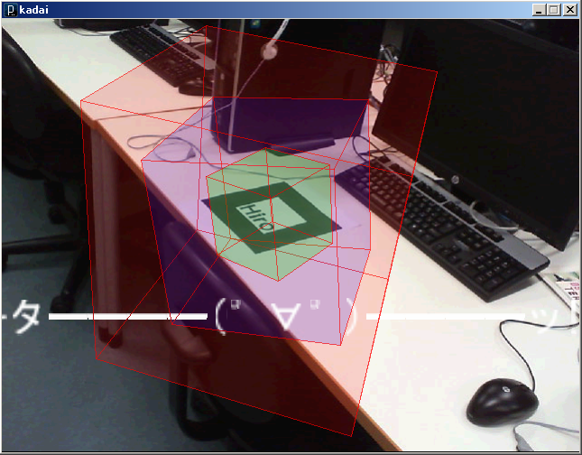
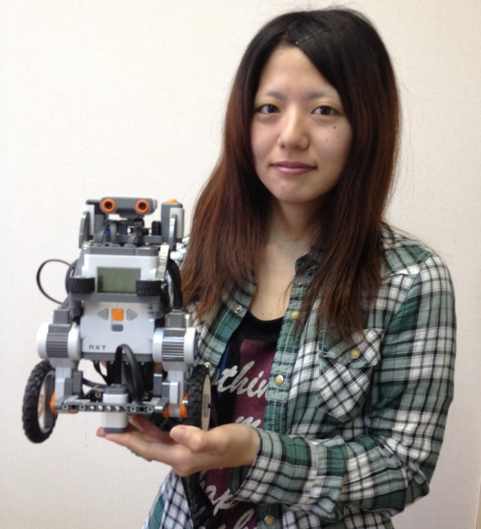
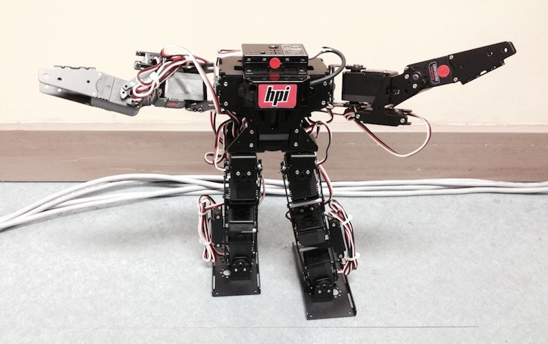
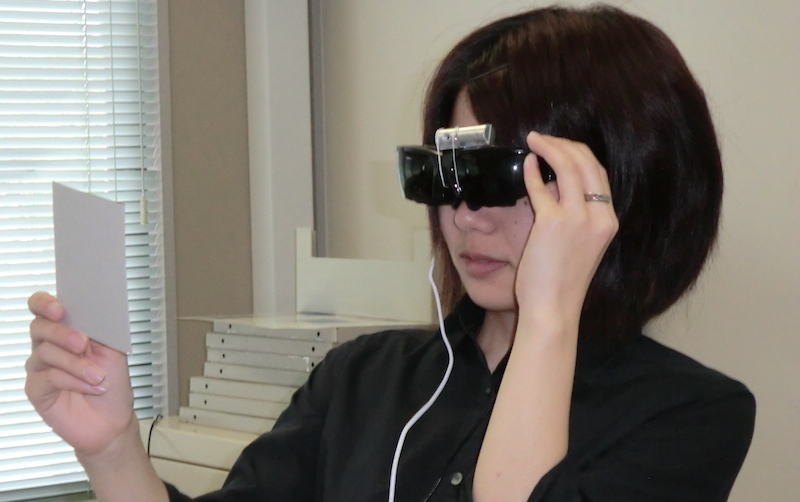
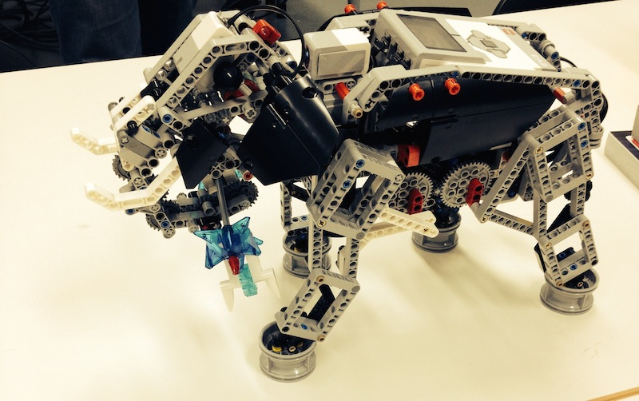

<!DOCTYPE html>
<html lang="ja">
<head>
  <meta charset="utf-8">
  <title>沖縄国際大学産業情報学科|オリジナルホームページ</title>
  <meta http-equiv="X-UA-Compatible" content="IE=edge">
  <meta name="viewport" content="width=device-width, initial-scale=1">
  <meta name="description" content="沖縄国際大学　産業情報学部　産業情報学科のオリジナルホームページです">
  <meta name="keywords" content="沖縄, 大学, 沖縄国際大学, 産業情報, IT">
  <meta name="author" content="沖縄国際大学産業情報学部産業情報学科">
  <!-- favicon, iOS-icon -->
  <link rel="icon" href="../favicon.ico" type="image/x-icon" />
  <link rel="shortcut icon" href="../favicon.ico" type="image/x-icon" />
  <link href="../iosicon.png" rel="apple-touch-icon">
  <!-- Freewall CSS -->
  <link rel="stylesheet" type="text/css" href="../plugins/css/style.css">
  <!-- Freewall CSS end-->
  <link rel="stylesheet" href="http://maxcdn.bootstrapcdn.com/font-awesome/4.3.0/css/font-awesome.min.css">
  <link rel="stylesheet" type="text/css" href="../css/my.css">
  <script src="../js/jquery-1.11.3.min.js"></script>
  <script src="../plugins/freewall.js"></script>
</head>
<body>
  <div class="menubar">
    <nav>
      <div class="cover">
        <div class="cover_nav">
          <div class="logo">
            
            <a href="../index.html">link</a>
          </div>
          <div class="logo_box">
            
            <a href="../index.html">link</a>
          </div>
          <i id="menu-btn" class="fa fa-bars"></i>
        </div>

        <ul id="menu-list">
          <li>
            <p>産業情報学科とは</p>
            <a href="../sanjo_toha.html">link</a>
          </li>
          <li>
            <p>教員・ゼミ紹介</p>
            <a href="../zemi.html">link</a>
          </li>
          <li>
            <p>生徒のコメント</p>
            <a href="../comment.html">link</a>
          </li>
          <li>
            <p>卒業後の進路</p>
            <a href="../shinro.html">link</a>
          </li>
          <li>
            <p>Q&nbsp;&amp;&nbsp;A</p>
            <a href="../q_and_a.html">link</a>
          </li>
          <li>
            <p>CONTACT</p>
            <a href="http://www.okiu.ac.jp/info/inquiry/" target="_blank">link</a>
          </li>
        </ul>
      </div>
    </nav>
    <div class="sponsored_pc link_hover">
        <h2>sponsored by</h2>
        
        <a href="#">link</a>
    </div>
  </div>

    <article id="comment">
      <section>
        <h1>小渡ゼミ</h1>

        <div class="cover">
          <h2>小渡&nbsp;悟（おど&nbsp;さとる）准教授</h2>
          
          <p>専門分野／コンピュータビジョン（画像解析，拡張現実感（AR）など），パターン認識<br><br>
          担当科目／情報処理システム論，情報通信ネットワーク論，プログラミングI・II，ロボットプログラミング<br><br>
          教職関連／情報科教育法，情報科教育法実習，情報通信ネットワーク実習，システム設計実習<br><br>
          URL:&emsp;<a href="http://www.okiu.ac.jp/teacher/sodo">http://www.okiu.ac.jp/teacher/sodo</a></p>
        </div>

        <div class="cover">
          <div class="mb">
            <h2>ゼミの概要</h2>
            <p>2011年度に新しくできたゼミです（先生は2010年9月着任）．<br>
            ゼミの基本方針<br>
            ・プログラミングを通して問題解決能力を身につけよう<br>
            ・基本的な情報技術に関する知識を習得しよう<br>
            ・何か面白いものを作ってみよう（動かしてみよう）<br>
            ・積極的に学外のイベントに参加しよう</p>
          </div>
          <div class="mb">
            <p><b>特徴その1：</b>上記の基本方針から，2年次ゼミではマルチメディアアプリケーション（アニメーション，3Dグラフィック，サウンド，カメラ映像，ARなど）の作成方法を学んだ後に各自でテーマを決め，作品（アプリケーション）を作成しゼミ内で発表会を開いています．<br>
            作品では入力としてマウスやキーボード以外にUSBカメラ，Kinect（距離計測センサ）を使ったものや，出力としてAR（拡張現実）を利用したものなどがあり，非常にバラエティに富んでいます．<br><br>
            例1：専門演習基礎（2012年度）「niconicoAR〜そして投稿へ〜」：カメラで写した映像に文字を入れて某動画サイト風にARマーカーを認識させる<br>
            例2：専門演習基礎（2013年度）「kinect4ルミネス」：Kinectで人物を識別し、その動きに合わせて映像と音楽を提供する</p>
            
          </div>
          <div class="mb">
            <p><b>特徴その2：</b>3年次ではロボット班（ETロボコンに参加する学生），画像処理班（PRMUアルゴリズムコンテスト，外観検査アルゴリズムコンテストに参加する学生）に分かれ，それぞれ夏期休暇中もシステム開発に取り組み，上位入賞目指して頑張っています．ETロボコンチームは，2013年はIT津梁まつりのETロボコン部門で準優勝，2013年のETロボコン地区大会はでは総合3位入賞をはたしています．</p>
            
          </div>
          <div class="mb">
            <p><b>特徴その3：</b>ゼミでは使用できる機材が豊富で，ロボットとしては市販のRIC-30，Rapiro，AR.Drone 1.0/2.0（小型飛行機），レゴマインドストームNXT，EV3（最新版レゴマインドストーム），計測機器としてUSBカメラ，Kinect，Leap motion，超音波センサ，温度・湿度・照度センサ，制御機器としてarduino，raspberry Pi，出力機器としてモバイルプロジェクタ，ヘッドマウントディスプレイなどが利用できます．<br>
            先生がガジェット好きなので「気が付くと『謎アイテム』が増えている」という感じです。</p>
            
          </div>
          <div class="mb">
            
            
          </div>
          <div class="mb">
          <b>特徴その4：</b>積極的に学外のイベントに参加しようということで，ETロボコン，画像処理コンテスト以外にも各種コンテストへの参加，また，研究会での研究成果の発表を行っています．
          </div>
        </div>

        <div class="cover">
          <h2>卒業論文</h2>
          <h3>２０１３年度卒業論文</h3>
          <ul class="sotsuron mb">
            <li><h4>「VRにおける錯覚を利用した臨場感向上システム」</h4></li>
            <li><h4>「地上走行型自律ロボットを用いた実走記録による環境マップ自動生成システムの構築」</h4></li>
            <li><h4>「ジェスチャ操作による飛行ロボットの操作システム」</h4></li>
            <li><h4>「レスキューロボット制御システムの構築」</h4></li>
            <li><h4>「カメラの映像からの道路標識自動認識システム」</h4></li>
            <li><h4>「AndroidとArduinoを用いた音声認識による家電制御」</h4></li>
            <li><h4>「防犯カメラによる異常行動の検知」</h4></li>
          </ul>

          <h3>学外発表</h3>
          <ul class="sotsuron">
            <li><h4>「佐久原，国吉，小渡：“ジェスチャによる小型飛行ロボットの制御,”平成25年度電気学会九州支部沖縄支所講演会，OKI-2013-24，CD-ROM（2013）」</h4></li>
            <li><h4>「幸地，中川，上地，小渡：“AndroidとArduinoを用いた簡易家電制御システム,”平成25年度電気学会九州支部沖縄支所講演会，OKI-2013-25，CD-ROM（2013）」</h4></li>
            <li><h4>「上地，小渡：“拡張現実感インタフェースとArduinoによる簡易家電制御システムの検討,”第4回福祉情報教育フォーラム in おきなわ，OR-10，p.p.47-48（2013）」</h4></li>
            <li><h4>「国吉，小渡：“深度センサ情報を用いた小型飛行ロボットの制御,”第22回インテリジェント・システム・シンポジウム(FAN2012)，2A-2，CD-ROM（2012）」</h4></li>
          </ul>
        </div>
      </section>
    </article>

  <script src="js/script.js"></script>
</body>
</html>
